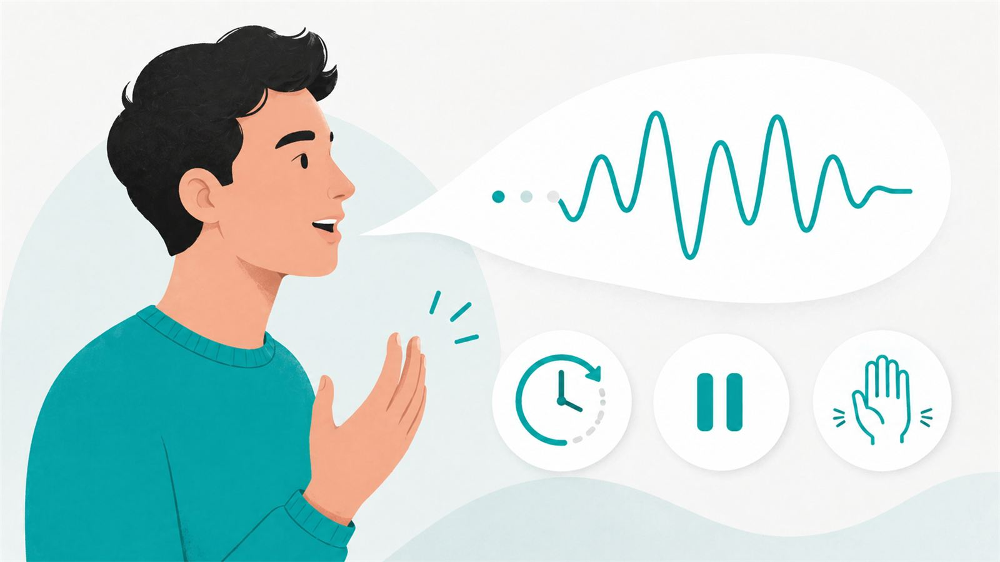

¿Qué técnicas existen para manejar la tartamudez?
Recopilación de estrategias de modelado y modificación de la tartamudez.
Próximamente
4 de agosto de 2026
Por qué se interviene apenas aparecen los signos de tartamudez, qué se trabaja con la familia y con el colegio, y qué se puede prometer y qué no.
Leer más14 de julio de 2026
Pautas prácticas para presentarte con mayor confianza, afrontar el miedo y relacionarte mejor con tu tartamudez.
Leer más9 de julio de 2026
Factores que influyen en la variabilidad de la tartamudez.
Leer más
29 de abril de 2026
Reflexión sobre el rol de las técnicas y la confianza sobre el proceso para ganar fluidez.
Leer másRecopilación de estrategias de modelado y modificación de la tartamudez.
Próximamente